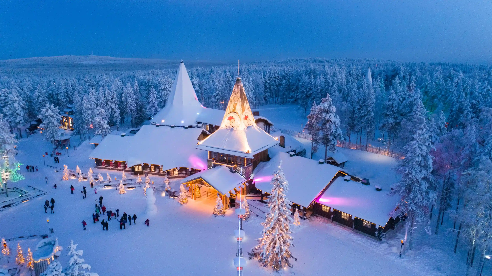
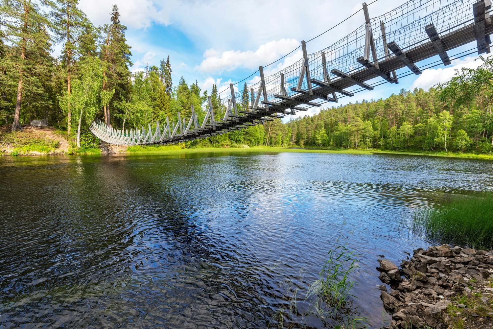
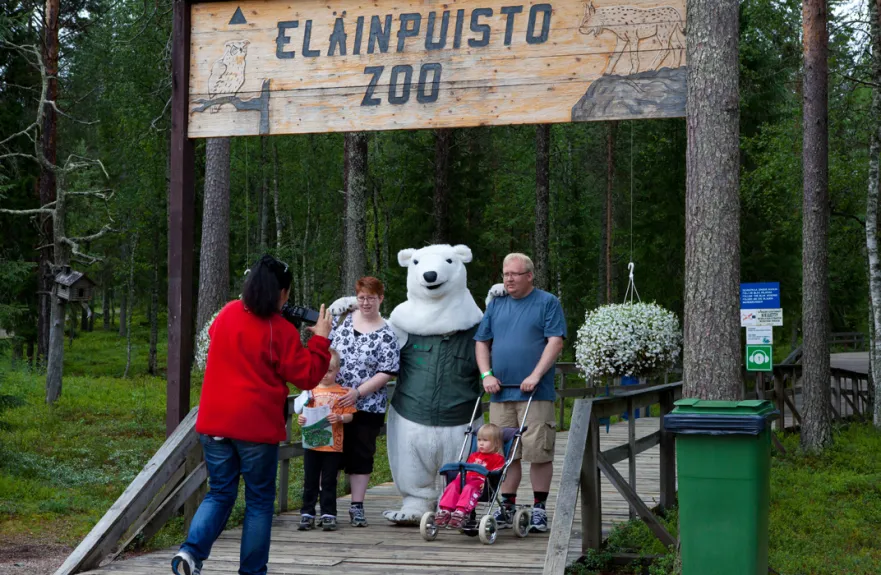

Joulupukin Pajakylä

📍Tähtikuja 1, 96930 Rovaniemi
Joulupukin Pajakylä sijaitsee Rovaniemellä Napapiirillä ja on yksi
Suomen tunnetuimmista matkailukohteista. Vierailijat voivat tavata
Joulupukin ympäri vuoden, ylittää napapiirin sekä tutustua erilaisiin
matkamuisto- ja käsityöliikkeisiin. Pajakylä tarjoaa elämyksiä
kaikenikäisille ja houkuttelee vuosittain satojatuhansia matkailijoita
eri puolilta maailmaa.
Karhunkierros

📍Liikasenvaarantie 137, 93900 Kuusamo
Karhunkierros on Suomen tunnetuin vaellusreitti, joka sijaitsee Oulangan
kansallispuistossa Kuusamon ja Sallan alueella. Noin 82 kilometriä pitkä
reitti kulkee upeiden jokien, koskien, riippusiltojen ja metsämaisemien
halki tarjoten elämyksiä niin kokeneille vaeltajille kuin päiväretkeilijöillekin.
Karhunkierros tunnetaan erityisesti henkeäsalpaavista maisemistaan ja
monipuolisesta luonnostaan, minkä ansiosta se kuuluu Suomen suosituimpiin
retkeilykohteisiin.
Ranua Resort eläinpuisto

📍Rovaniementie 29, 97700 Ranua
Ranua Resort on Ranualle sijoittuva eläinpuisto, joka on erikoistunut pohjoisen
ja arktisen alueen eläinlajeihin. Eläinpuistossa voi nähdä muun muassa jääkarhuja,
ilveksiä, susia, ahmoja, pöllöjä ja useita muita pohjoisen luonnon eläimiä niiden
luonnollisia elinympäristöjä muistuttavissa aitauksissa. Ranua Zoo on suosittu
vierailukohde ympäri vuoden ja tarjoaa mielenkiintoisen elämyksen niin lapsiperheille
kuin luonnosta kiinnostuneille vierailijoille.